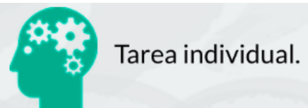

Duración 1 sesión. 
Entra en tu clase https://www.liveworksheets.com/ (Si no lo has hecho antes, regístrate con el código que te de el profe y rellena los datos de registro).
Luego realiza las fichas correspondientes a Cálculo de circuitos e Introduction to Electricity.
Recuerda iniciar la ficha correspondiente a este reto en tu Diario de Aprendizaje completando los pasos 1 y 2 antes de empezar a resolverlo.
Cuando termines de resolverlo contestamos las preguntas correspondientes a los pasos 3 y 4